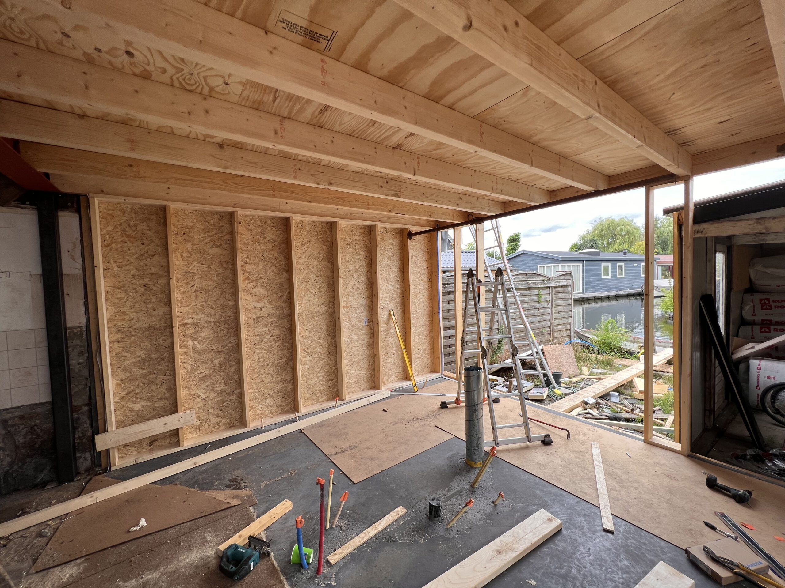

Kort antwoord: ontwerp vanuit gebruik, niet vanuit meters
Een aanbouw maakt je woonkamer dieper of breder, maar extra vloeroppervlak is geen doel op zich. Een verkeerd geplaatste pui, kolom of radiator kan de nieuwe meters lastig bruikbaar maken. Teken daarom eerst waar je zit, eet, naar buiten loopt en opbergt. Pas daarna kies je de buitenmaat.

Bewaarbare 7-punten ruimtecheck
- Meet je meubels. Teken bank, tafel, stoelen, kast en televisie op schaal. Markeer ook de ruimte die deuren en uitgeschoven stoelen innemen.
- Teken de dagelijkse routes. Loop op papier van hal naar tuin en van keuken naar eettafel. Een route dwars door de zithoek blijft iedere dag storen.
- Bepaal de gevelopening. Een brede doorgang verbindt oud en nieuw, maar vraagt vaak een ligger en soms een kolom. Laat de draagconstructie bepalen vóór je de indeling definitief maakt.
- Bescherm het daglicht. Een diepe aanbouw kan de bestaande kamer donkerder maken. Vergelijk een brede pui, extra zijraam of daklicht en denk meteen aan zonwering tegen zomerhitte.
- Kies het zichtpunt. Bepaal of je vanaf de bank naar de tuin, haard of televisie wilt kijken. Dat stuurt de plek van glas, dichte wand en aansluitpunten.
- Plan installaties. Noteer stopcontacten, verlichting, verwarming en ventilatie op dezelfde tekening. Zo voorkom je kabels over een looproute of een radiator achter de bank.
- Test op ware grootte. Plak wanden en meubels met tape uit op de vloer of in de tuin. Loop de routes met stoelen erbij; een plattegrond kan ruimer lijken dan de praktijk.
Welke keuze lost welk probleem op?
- Meer diepte: logisch voor een open leefkeuken met eettafel aan de tuin, mits de bestaande kamer genoeg licht houdt.
- Meer breedte: bruikbaar voor een aparte zit- en eethoek, maar alleen als perceel en constructie dat toelaten.
- Grote pui: geeft zicht en licht; reserveer ook dichte wand voor kast, televisie of kunst.
- Daklicht: brengt licht dieper naar binnen; leg positie, zonwering en afwerking vroeg vast.
Van ruimteplan naar casco-prijsindicatie
Onze calculator geeft een casco-prijsindicatie als bandbreedte. De geïsoleerde, wind- en waterdichte schil, kozijnen en elektra tot casco-niveau vormen het uitgangspunt. Vloer, stucwerk, schilderwerk en maatwerkinterieur horen bij de afbouw en zitten niet standaard in die indicatie.
Controleer daarnaast op adres of je een vergunning nodig hebt via het Omgevingsloket. Het officiële stappenplan bij bouwen en verbouwen helpt om regels, buren en voorbereiding op tijd mee te nemen.
Veelgestelde vragen
Hoe diep moet een aanbouw voor de woonkamer zijn?
Daar is geen zinvolle standaardmaat voor. Meet de gewenste meubels en routes, test de indeling op schaal en controleer hoeveel daglicht de bestaande kamer overhoudt.
Is een volledig glazen achtergevel altijd beter?
Nee. Veel glas geeft zicht, maar minder plek voor meubels en kan extra zonwering vragen. Combineer glas en dichte wand op basis van je indeling.
Wanneer leg ik elektra en verlichting vast?
Vóór de casco-offerte. Gebruik één meubelplan voor stopcontacten, schakelaars en lichtpunten, zodat de aansluitingen niet na oplevering hoeven te verhuizen.
Past je indeling? Reken de casco-schil door
Kies formaat en opties voor een casco-bandbreedte. De definitieve offerte volgt na controle van woning, constructie en bereikbaarheid op locatie.